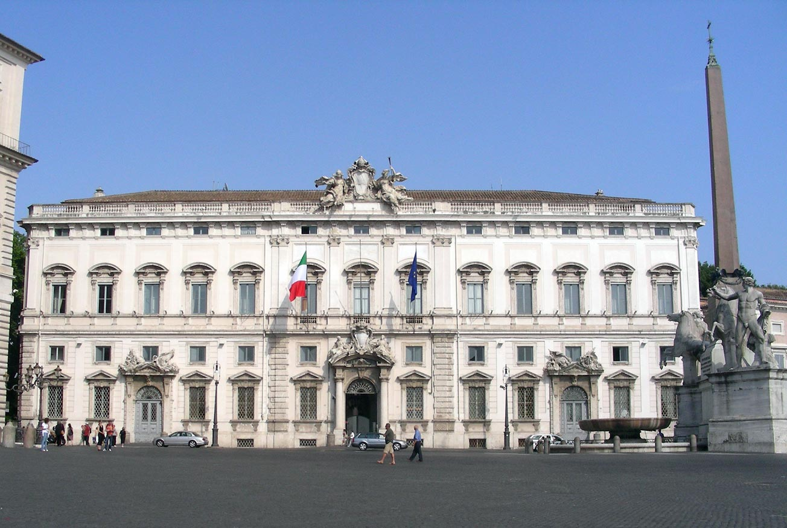
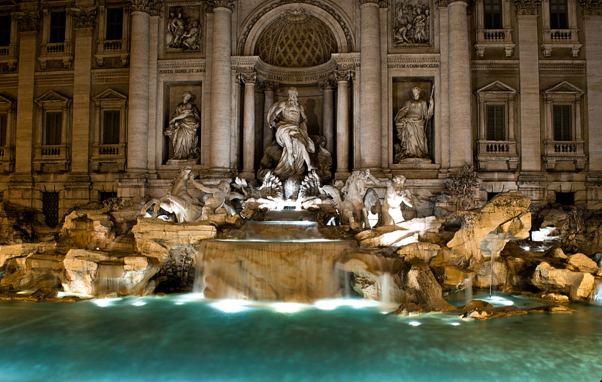
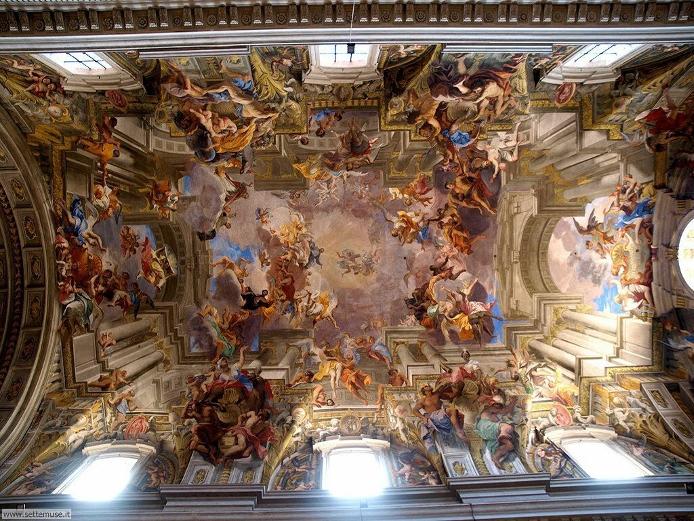
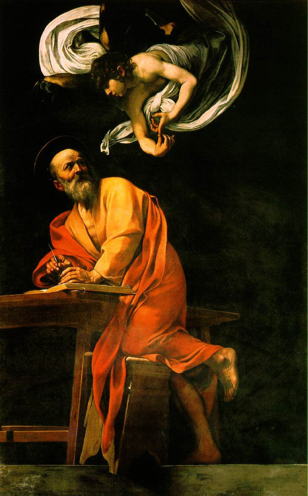
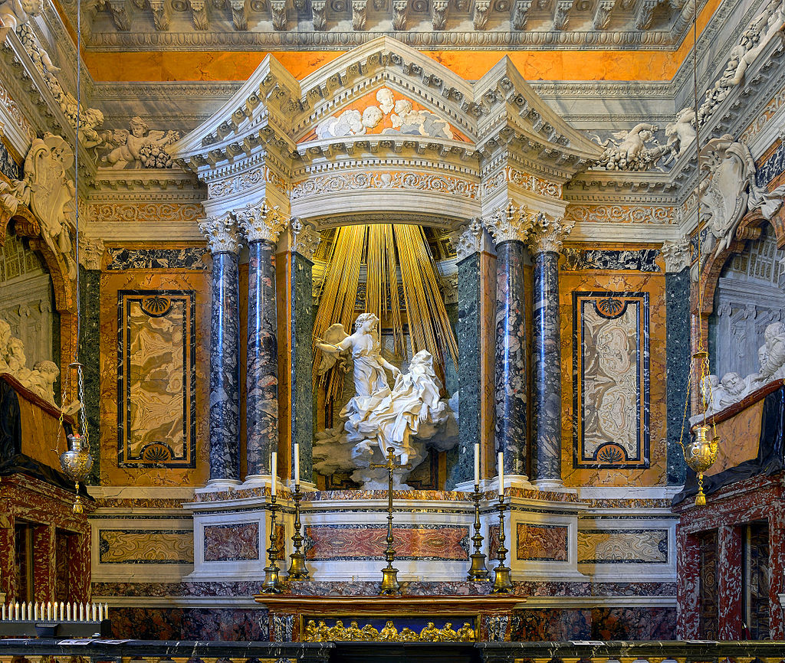
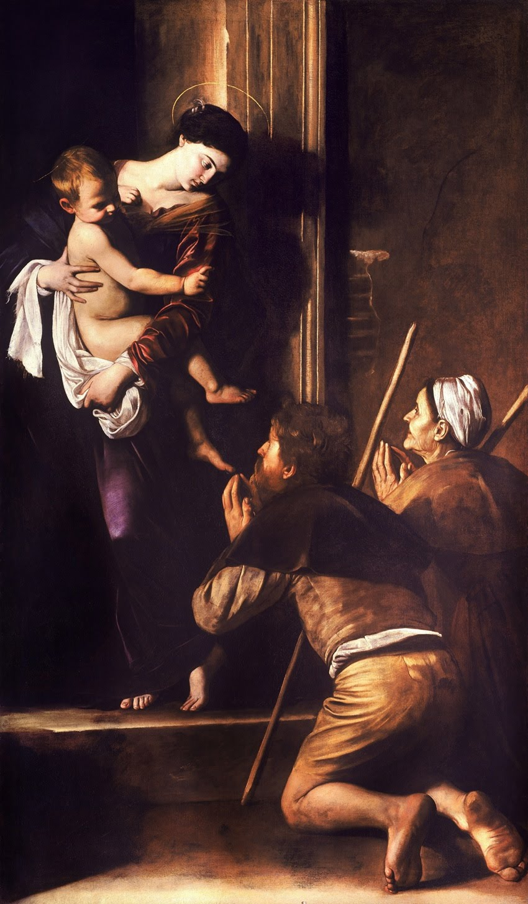
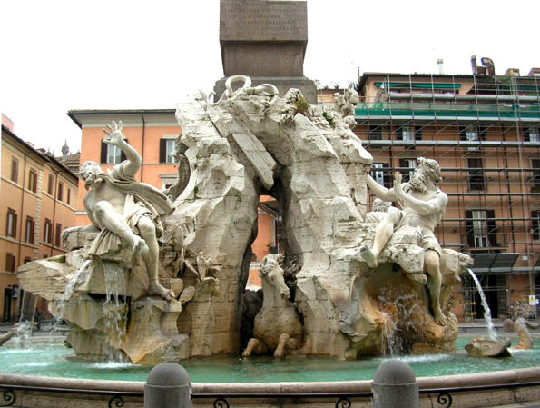

Il giorno della partenza era arrivato, ci eravamo travati verso le 6:30 di mattina ed eravamo pronti per partire e vedere questa città di cui ci avevano parlato tanto bene.
Quasi neanche da dire: il viaggio è andato bene e nessuno è stato male, siamo anche riusciti a fermarci per prendere qualcosa da mangiare. Quando siamo arrivati in hotel abbiamo appoggiato le valigie
e ci siamo incontrati con la guida che ci ha portato a vedere un sacco di opere e luoghi, qui c'è una raccolta di quelli più belli e importanti.
San Pietro del Quirinale - Bernini

La facciata del quirinale è stata realizzata dal progetto di Bernini, in alto troviamo Pietro e Paolo, li possiamo riconoscere per i loro segni particolari: le chiavi (che è il simbolo religioso)
per Pietro e la spada (che è il simbolo imperiali) per Paolo
Fontana di Trevi - Nicola Salvi

La Fontana di Trevi è la più grande fontana di Roma, è stata progettata da Nicola Salvi e si trova su un lato del Palazzo Poli, la fontana rappresenta il mare.
Nella faccita vediamo il dio dei mari Poseidone sopra un carro trainato da due cavalli: quello a (il cavallo placido) è calmo e rappresenta il mare quieto, quello a sinistra è agitato (cavallo agitato) e rappresenta un mare in tempesta
destra
Volta sant'Ignazio

La cupola è stata creata da Andrea Pozzo, quando si guarda in alto posizionandosi sopra un disco d'oro posizionato sul pavimento della navata si può notare un bellissimo effetto prospettico infatti sembra
che la cupola sia "sfondata" e sembra di vedere il cielo.
Vocazione di San Matteo - Caravaggio

Il dipinto si trova nella Cappella Contarelli. Questa è la prima opera eseguita da caravaggio per una destinazione pubblica.
Nella parte superiore della tela troviamo sotanto una finestra, mentre in quella inferiore sono presenti alcuni personaggi, tra cui San matteo.
San Matteo sta osservando Gesù e punta il dito su di se come per dire "sono stato scelto proprio io'"
San Matteo e l'angelo - Caravaggio

il dipinto si trova di fianco al quadro visto in precedenza. La particolarità di questo quadro è l'angelo che viene rappresentato in modo molto umano e questo rende il dipinto non "severo".
Estasi di Santa Teresa - Borromini

Questo capolavoro rappresenta Santa Teresa in uno stato di estasi appoggiata su una nuvola che la sta portando in cielo, a lato sono raffigurati gli appartenenti alla famiglia Cornano (la commissionatrice dell'opera) che osservano la scena
come se fosse uno spettacolo teatrale. Sopra le teste della santa e dell'angelo sono posizionate delle aste di legno dorate che sembrano dei raggi di sole, l'effetto è accentuato dalla luce proveniente da una finestra nasconsta.
Madonna dei pellegrini - Caravaggio

Questo quadro si trova nella Cappella Cavalletti. Il dipinto raffigura la Madonna con in braccio Gesù bambino che benedice dei pellegrini, al tempo quest'opera non ha ricevuto grande ammirazione
a causa della raffigurazione dei piedi sporchi e gonfi dei pellegrini. Caravaggio aveva deciso di raffigurarli perchè secondo lui erano il segno della fatica compiuta da quei pellegrini che hanno poi
ricevuto in dono la benedizione di Maria.
Il Pantheon
La fontana dei quattro fiumi - Borromini

Si trova al centro di piazza Navona, davanti alla chiesa di Sant'Agnese in Agone. La fontana è composta da una vasca ovale e da quattro giganti opposti tra loro che rappresentano i "quattro fiumi del mondo" (uno per ogni continente conosiuto all'epoca)
A seguito di questa lunga camminata siamo andati direttamente a mangiare, concludendo questa giornata